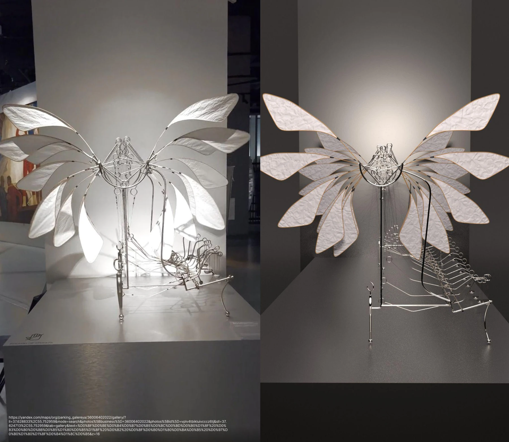
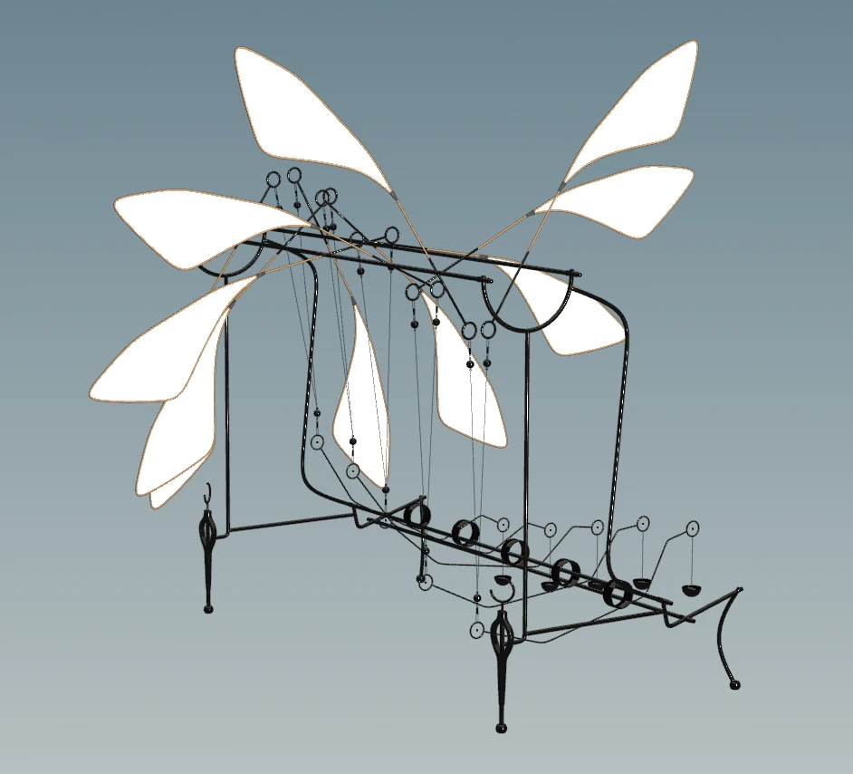
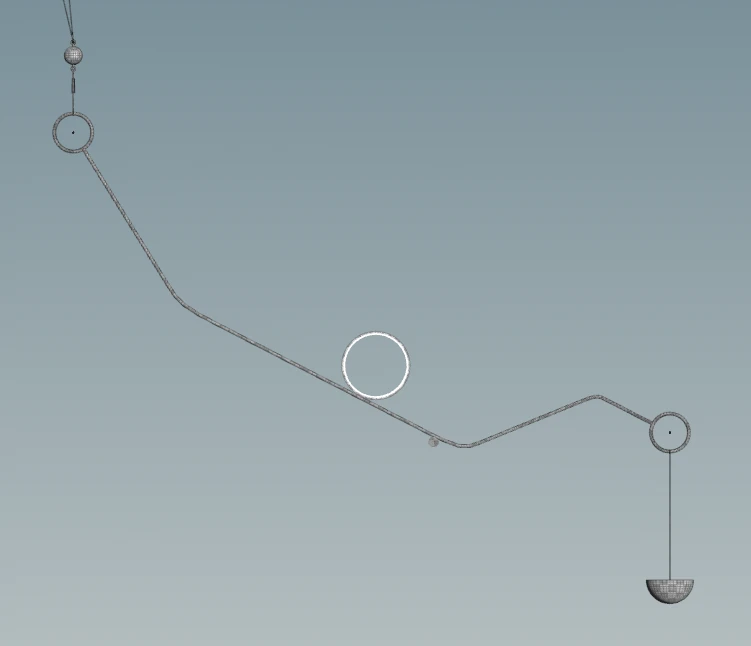
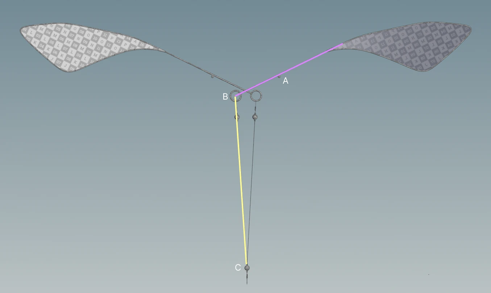

Case Study · May 2026
Wired Wings
A procedural reconstruction of a kinetic installation, translating a complex mechanical armature into a controllable system of geometry, constraints, and analytical motion.
RoleProcedural Modeling & Animation
ToolsHoudini · Karma XPU
DateMay 2026
Mechanical motion, rebuilt as a system
The sculpture combines paper wings, steel-wire arms, circular joints, and counterweights. The goal was to preserve the character of the original installation while making every repeated unit procedural and animation-ready.

Cam–follower mechanism
A continuously rotating cam drives an oscillating follower arm. The cam center is evaluated each frame, while atan2 and acos solve the tangent angle required to orient the follower against the circle.
This converts continuous rotation into the rhythmic swing that powers the wing system.

Analytical triangle solution
Wing attachment points and ring joints form a fixed-length triangle linkage. Each frame, the law of cosines resolves the world-space rotation of the connected arms as the driven point moves.

A reusable kinetic assembly
Intersection Analysis extracts stable contact points regardless of rotation. The completed setup generates synchronized flapping motion with approximately 322,000 polygons and a render time of about 1.8 minutes per frame.
